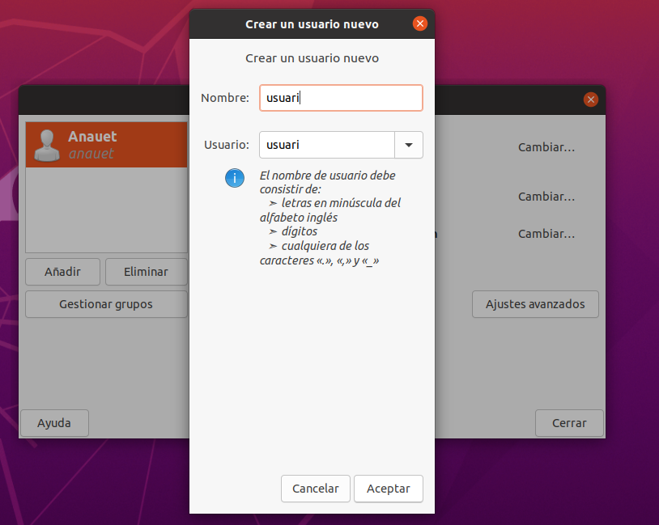

Sprint2¶
Gestió de la Informació del Sistema i Administració¶
Què és un usuari?¶
Un usuari és una entitat lògica creada per gestionar els permisos, l'accés i les accions en un sistema operatiu o aplicació. Gràficament no pot treballar més d’un usuari, però amb terminals si.
Què son els grups i quina utilitat tenen.¶
És una col·lecció d’usuaris que comparteixen permisos i/o privilegis. serveixen per donar/llevar permisos a un grup d’usuaris enlloc de fer-ho un per un. Per exemple, tots els usuaris del grup “sudoers” poden utilitzar les comandes utilitzant “sudo” a l’inici de les mateixes. ****
Creació D'usuaris¶
Hi ha diverses formes de crear usuaris a un sistema Ubuntu. Depenent del resultat que vulguem aconseguir, de vegades algunes formes seran més òptimes que altres.
La més simple: interfície gràfica. Amb la següent comanda, podem instal·lar l’interfície gràfica que ens permet crear i esborrar usuaris sense la necessitat d’usar el terminal.

Finalment, i després d’haver escollit la contrasenya, podem incloure l’usuari en algun dels grups existents i seleccionar quins permisos tindrà.
“useradd ”¶
Un forma de crear un usuari amb terminal és utilitzar la comanda “useradd” seguida del nom de l’usuari:
Aquesta comanda crea l’usuari “julia” al sistema, però aquest usuari no tindrà cap carpeta d’usuari fins que iniciem sessió per primera vegada amb l’interfície gràfica. A més la comanda no retorna cap confirmació de la creació de l’usuari.
“adduser ”¶
Una altra forma de crear un usuari amb terminal és la comanda “adduser” seguida de l’usuari.
Aquesta comanda proporciona més informació sobre el procés de crear un usuari i, en escència, és més còmoda.
Sistemes d’arxius i particions¶
Per crear i modificar noves particions¶
Amb la comanda fdisk -l podem llistar tots els dispositius d’emmagatzematge de que disposem per tal de fer particions i altres modificacions.
amb la comanda fdisk seguida de la ruta al disc que volem modificar, podem entrar al menú d’opcions que ofereix el sistema per a aquell disc.
Es important destacar que qualsevol canvi que fem es registra però no s’aplica fins que el guardem, cosa que veurem ara mateix.

Premem ‘n’ per crear una nova partició, això ens demanarà un seguit d’especificacions per aquesta. Per a una prova simple els valors predeterminats son suficient. El disc és de 2GB i hem utilitzat la meitat per fer la prova.
Inmediatament després premem ‘w’ per aplicar els canvis (si no volem fer cap altra cosa), ja que tot el que hem fet es guarda en la memòria però no es fa realment fins que no confirmem amb aquesta tecla.

Aquest és el resultat final de la partició
Amb mkfs.ext4 -b 2048 /dev/sdb1 canviem la mida del bloc de 4096 (per defecte) a 2048 per a la nostra partició.

Crear només la partició no serveix de res, doncs tenim que montarla en una carpeta. Creem una carpeta particio1 per fer-ho i hi montem la partició amb el sistema d’arxius que seleccionem en aquest cas ext4 amb la següent comanda:
mount -t ext4 /ruta/particio /ruta/a/carpeta/montatge
Si fem un
Desmontar el disk de la carpeta no elimina els seus arxius doncs fer el montatge només es una mena de ruta des de la carpeta fins al contingut de la partició del disc. Així doncs, si tornem a montar-lo veurem com els arxius segueixen allí.
el montatge del disc es desfarà cada cop que reiniciem el sistema si ho fem només d’aquesta forma. Per fer-ho permanent hem de modificar el fitxer /etc/fstab.

Concretament hem d’afegir una linia que inclogui amb aquest ordre:
- La ruta de la partició
- La ruta a la carpeta de moantatge
- El tipus de sistema d’arxius
- Els permisos de la partició
- Si s’ha de fer una còpia de seguretat amb dump
- La prioritat que te el sistema de fitxers en qüestió per ser comprovat durant l’arrenca

Després del reboot
Servidor samba¶
Còpies de seguretat¶
Conceptes teòrics¶
S’ha d’establir una bona política de còpies de seguretat per al que cal conèixer els següents conceptes respecte als tipus de còpies de seguretat:
- Completes
- Diferencials
- Incrementals
Còpies de seguretat completes:¶
Les còpies de seguretat completes copien tots els continguts al complet, cosa que fa fàcil la posterior recuperació de les dades. Cal considerar que al ser completa serà més lenta de fer i de restaurar.
Còpies de seguretat diferencials:¶
Emmagatzema còpies només dels canvis fets des de la última còpia completa, per restaurar-la necessitem la última còpia completa i la última diferencial.
Còpies de seguretat incrementals:¶
Guarda la informació des de la última còpia qualsevol. Per restaurar necessita la última còpia completa, la última còpia diferencial i totes les còpies incrementals
Programes en Interfície¶
- Deja-Dup
Comandes¶
taula comparativa
diferències fonamentals:
cp: és una còpia simple no intel·ligent que no mira res i ho còpia tot, es fa en local.

rsync: és una còpia intel·ligent, només còpia els modificats i es pot fer entre màquines remotes via SSH.

També ha borrat el fitxer adeu, ja que no estava a la còpia feta però si a la ruta final (ho ha fet amb l’opció —delete)
dd: No és pròpiament per fer còpies d’arxius, treballa en local, treballa a nivell de bloc, va bé per fer clonacions de discs i particions. No només còpia arxius, també metadades, sistema d’arxius, mida dels blocs… Es pot utilitzar també per esborrar arxius definitivament.

Primer fem la còpia al disc dur. Després, al montar-lo a la carpeta “copia_dades_de_dades” apareixen els arxius resultants de la còpia (no es mostraven abans ja que el disc no estava muntat, però això ja s’ha vist a l’apartat de particions)

A l’ultima imatge, els hash no són iguals ja que a l’hora de fer la còpia hem utilitzat 4M per la velocitat, i alguna cosa haurà anat diferent, al refer la còpia amb 1M la còpia acaba resultant perfecta i els arxius i estructures de dades son iguals resultant en un hash idèntic per totes dues particions.
Automatització d’scripts i cron i anacron¶
Teoria¶
Diferències entre anacron i cron¶
En sistemes operatius anteriors funcionaven per separat, ara estan integrats i funcionen de forma conjunta. Serveixen per automatitzar tasques. Veurem quan utilitzar un i l’altre:
Anacron: L’utilitzarem quan un ordinador pugue estar apagat, ja que en engegar-se anacron detecta que hi ha una tasca no executada i l’executa. L’utilitzarem també quan sigue una automatització general a nivell general i de SO
Cron: Quan executem alguna cosa molt concreta a una hora determinada i pensem que l’ordinador estarà engegat.
Opcions cron: utilitzarem /etc/crontab quan volem executar alguna cosa globalment per tot els usuaris.
Quan volem definir alguna cosa específica per algun usuari en particular utilitzarem:
crontab -e -u usuari
Dintre del directori /etc/cron/ hi ha carpetes preparades.
Pràctica¶
En l’exemple següent creem un script per crear un arxiu de forma automatitzada en engegar l’ordinador.
Obrim un editor de text (nano) per crear un script bash “copia.sh".
Dins l'script, utilitzem una comanda tar per crear un arxiu comprimit (tar.gz) del directori Documents. El nom del fitxer conté un timestamp que indica la data i hora d'execució. Guardem l'script i canviem els permisos amb chmod +x copia.sh per fer-lo executable.

Verifiquem que el fitxer s'ha creat correctament utilitzant ls.
Executem l'script manualment amb ./copia.sh i observem que es genera l'arxiu comprimit al directori indicat, a Escritorio.

Editem el fitxer de configuració de cron (/etc/crontab) per programar l'execució automàtica de l'script. Especifiquem que l'script s'executi en una data i hora concreta. Per exemple, a les 12:14 del dia 9 del mes 1 (gener) i el dia de la setmana 4 (dijous).

Comprovem que la programació està configurada i copiem l'script al directori cron.daily per assegurar que s'executi diàriament si és necessari.

Conclusió¶
Aquest procés ens permet configurar un sistema automàtic de còpies de seguretat amb un script d’execució automàtica utilitzant cron.